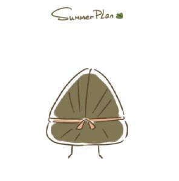
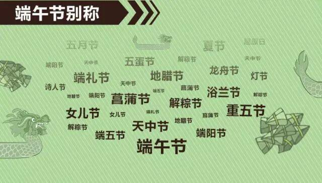
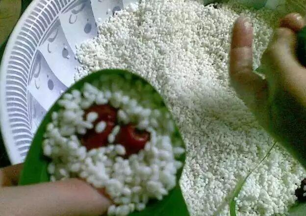
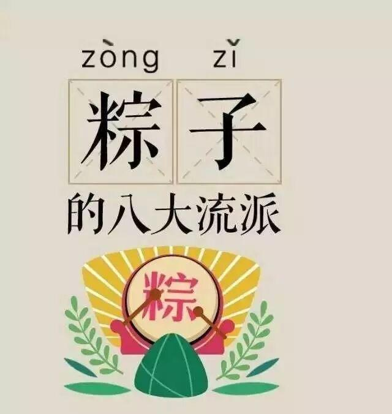
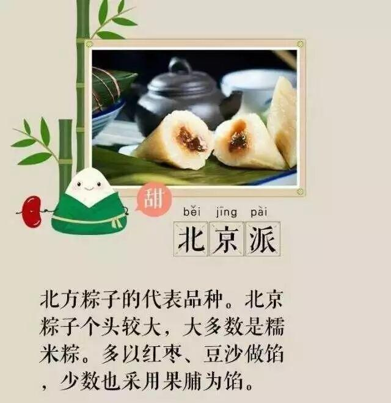
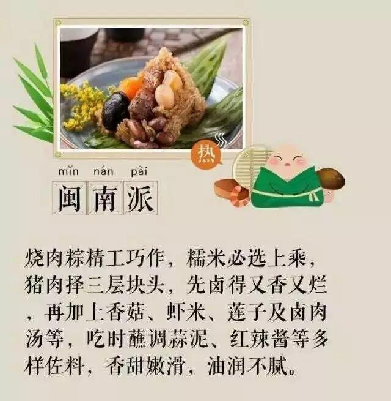

使用小程序

端午节，为每年农历五月初五。
亦称为“端阳节”。


不知道你家里吃的
是啥样的粽子
粽子也是分派系的
你知道几种？



除了吃粽子
五彩绳、煮鸡蛋、艾蒿、风筝、龙舟……
那是相当地丰富
1
煮艾蒿水
用来煮艾蒿水的艾蒿都是提前准备好，晒干了的。一般在傍晚时分，家里就开始着手准备了。先在大门两边挂上两束艾蒿，驱邪。《荆楚岁时记》中说：“采艾以为人。悬门户上，以禳毒气。”然后，用大锅煮艾蒿水，煮出来的水要先喝一杯（超苦的，味道也是怪怪的），然后再用这种水洗澡，目的是除去人身上的污秽。
2
划龙舟
龙舟竞渡又称“赛龙舟”、“划龙船”、“龙船赛会”等，龙舟竞渡前一般都要举行隆重的祭祀仪式。如在屈原投水的汨罗江畔，每年龙舟竞渡前，都要先祭屈子庙。来自四面八方的男女老幼，抬着龙头，一批一批地汇聚在屈原像下，叩拜、吊唁、以粽子、包子、酒水等祭奠。然后由主祭人将一条红绸系到“头龙”的头上，由“头桡”将龙头扛到江边洗澡，洗完后将龙头安于船首，这才开始赛龙舟。
端午节吃粽子，划龙舟是必然的
有些地区也有额外的特殊习俗呢~
1
江苏省
鸭蛋络子
嘉定县端午，不论贫富，必买石首鱼(俗称鳇鱼)煮食。仪征县也有“当裤子、买黄鱼”的俗谚。南京端午，各家皆以清水一盒，加入少许雄黄，鹅眼钱两枚，合家大小均用此水洗眼，称为“破火眼”，据说可保一年没有眼疾。
高邮的端午较为特殊，有系百索子、贴五毒、贴符、放黄烟子、吃“十二红”等习俗，孩子兴挂“鸭蛋络子”，就是挑好看的鸭蛋装在彩线结成的络子中，挂在胸前。
2
河北省
五毒饼
北平忌端午节打井水，往往于节前预汲，据说是为了避井毒。市井小贩也于端午节兜售樱桃桑葚，据说端午节吃了樱桃桑葚，可全年不误食苍蝇。各炉食铺出售“五毒饼”，即以五种毒虫花纹为饰的饼。滦县已许聘的男女亲家咸于端午节互相馈赠礼品。赵县端午，地方官府会至城南举行聚会，邀请城中士大夫宴饮赋诗，称为“踏柳”。
3
山东省
七色线
邹平县端午，每人早起均需饮酒一杯，传说可以避邪。日照端午给儿童缠七色线，一直要戴到节后第一次下雨才解下来扔在雨水里。临清县端午，七岁以下的男孩带符(麦稓做的项链)，女孩带石榴花，还要穿上母亲亲手做的黄布鞋，鞋面上用毛笔画上五种毒虫。意思是借着屈原的墨迹来杀死五种毒虫。即墨在端午节早晨用露水洗脸。
4
广东省
放风筝
从化县端午节正午以烧符水洗手眼后，泼洒于道，称为“送灾难”。新兴县端午，人家各从其邻近庙宇鼓吹迎导神像出巡。巫师并以法水、贴符驱逐邪凡魅。石城县端午，儿童放风筝，称为“放殃”。
编辑：马忠臣
５
东北地区
纸葫芦
早晨，在自家的门楣上挂上葫芦，象征家族人丁兴旺。另外，家里还可以挂上用五彩线和布条做的辣椒、簸箕、扫帚等，这些东西都是寓意吉祥，赶走五毒，扫除瘟疫的意思。
民间挂纸葫芦还有一段故事来历：据说唐朝起义军首领黄巢曾得到一位老太太的帮助。黄巢临走时对老太太说：“日后兵荒马乱时，你就做个五彩纸葫芦挂在门上，我就能搭救你。”后来恰巧是五月初五端午节这天，黄巢率大军攻进长安，老太太和她的邻居挂上了彩纸葫芦，都得到了起义军的保护，这段传奇一直流传至今。
６
云南省
豆芽炒豆腐
在滇西南，人们会在端午节的前几天，将蚕豆浸泡至发芽，待端午节这天经过煮熟来吃，或是在用油炸后食用，既酥又脆，很是可口，意识豆子发芽，在南方刚好种完水稻，也就寓意着庄稼将获得好的收成；在这一天人们家里必定会做的一道菜便是豆芽炒豆腐，吃这一道菜寓意着全家“亲吉平安”（云南方言），也就是家里人在这只有，身体健康，平安幸福。
编辑：马忠臣